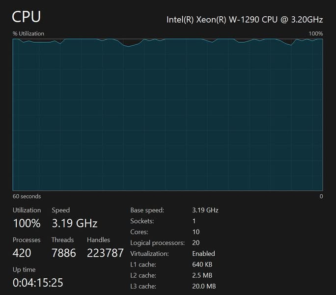

จาก Pentium ถึง Xeon บันทึกคนรันงานข้ามคืน


คืนวันที่ 28 ตุลาคม 2569 ผมรีรันงานมาแล้วกว่า 4 ชั่วโมงด้วยเครื่อง Xeon 10 คอร์ 20 เธรด ที่ประมาณ 3.2 GHz ตอนเขียนโพสต์ยังคาดว่างานจะเสร็จราวตีสาม
ระหว่างรอก็นึกถึงสมัยเรียนที่ใช้ Pentium 100MHz แบบคอร์เดียว ถ้าต้องเอางานแบบเดียวกันกลับไปรันบนเครื่องยุคนั้น คงได้ลุ้นกันอีกนาน
320 เท่าเป็นการคิดเล่น ๆ จากความถี่กับจำนวนคอร์
ถ้าเทียบเฉพาะความถี่ 3.2 GHz กับ 100 MHz แล้วคูณจำนวนคอร์ 10 ต่อ 1 ก็ได้ 320 เท่า ผมเลยนึกเล่น ๆ ว่างานข้ามคืนวันนี้ สมัยนั้นอาจต้องรอเกือบครึ่งปี แต่ตัวเลขนี้เป็นเพียงการเทียบหยาบ ๆ เพราะ CPU แต่ละยุคทำงานต่อหนึ่ง clock ได้ไม่เท่ากัน
ต้องเขียนโปรแกรมให้รอดก่อน แล้วค่อยจับเวลา
ผมจำได้ว่า RAM สมัยนั้น น่าจะแค่ 32MB แค่จะอ่านข้อมูล WGS genome ก็คงต้องค่อย ๆ ทยอยอ่านทีละส่วน จะยกทั้งชุดเข้า RAM คงไม่ได้ ข้อจำกัดจึงเริ่มตั้งแต่ทำอย่างไรให้โปรแกรมทำงานได้ ก่อนจะไปลุ้นว่ารันเสร็จเมื่อไร
สมัยนี้ลุ้นให้เสร็จตีสาม ส่วนสมัยนั้นอาจหมดทุนหรือหมดเวลาเรียนไปก่อนก็ยังไม่รู้ว่าจะรันจบหรือเปล่า แต่คนรันงานยังต้องแบกสังขาร อดหลับอดนอน เหมือนกัน ไม่ว่าจะยุคไหน 555